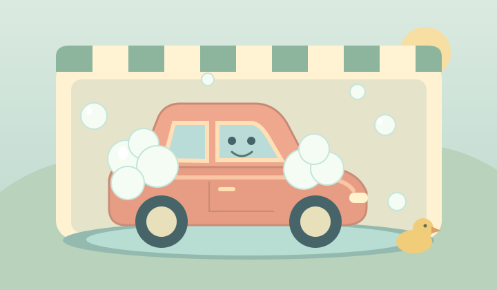
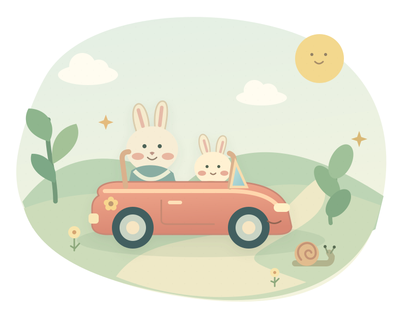
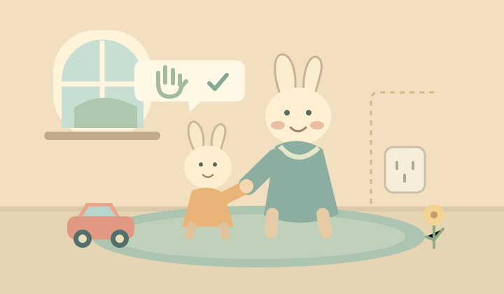
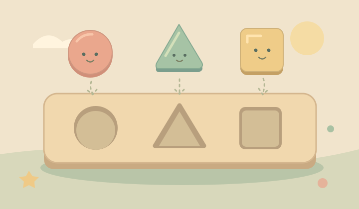
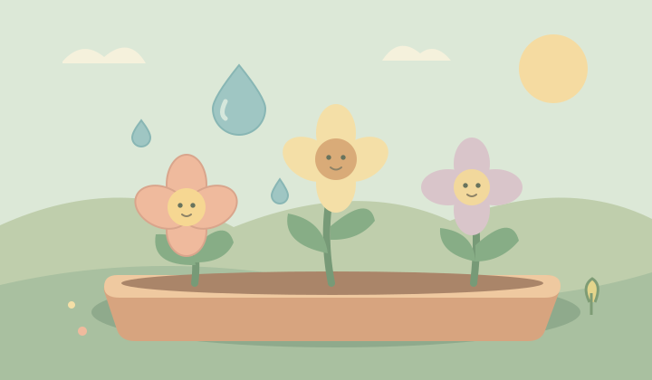
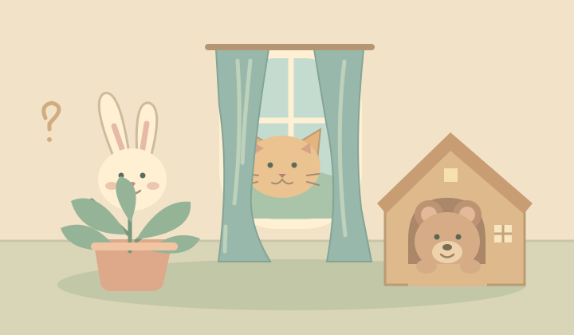

好习惯 · 小手动起来
不急，我们一起没有广告，专心玩
没有输赢，慢慢来
大手陪小手，更有趣
LITTLE HANDS, BIG DISCOVERIES
今天，想玩哪一个？
点一点、摸一摸。小小的发现，也值得开心。

安全启蒙 · 亲子共玩新故事
认知启蒙 · 形状配对新体验
生活发现 · 温柔照顾新体验
小小发现 · 躲猫猫新体验小小星球，还在慢慢长大。每一段互动，认真做好再见面。
A LITTLE NOTE FOR GROWN-UPS最好的陪伴，
最好的陪伴，
是你也在这里。
互动中的每一次小发现，
都可以成为你们聊天的开始。
玩一会儿，也抱一抱。
01
先一起玩，再慢慢放手
陪孩子开始第一次探索。可以问：“车车喜欢什么？”“需要帮助时，我们找谁？”不用考对错。
02
小故事，连着真实的生活
安全情景只练习“不碰、走开、叫大人”，不能替代看护。现实中，请由成人做好插座与电线的防护。
03
随时停下，也很棒
不设倒计时、不用刷分，也没有每日任务。眼睛累了就休息，放下屏幕，到真实世界一起玩。
关于声音、隐私与使用
本站没有广告、支付、儿童账号或信息填写。站内不收集孩子的姓名、照片、联系方式，也不接入统计或追踪脚本。
声音在点击开始后启用，可随时关闭。语音使用设备的中文朗读功能；若设备不支持，图画和动态提示仍可引导互动。只在本机记住静音选择。
本站已公开，有链接就可以访问。体验不需要注册，也不会保存孩子的互动记录。